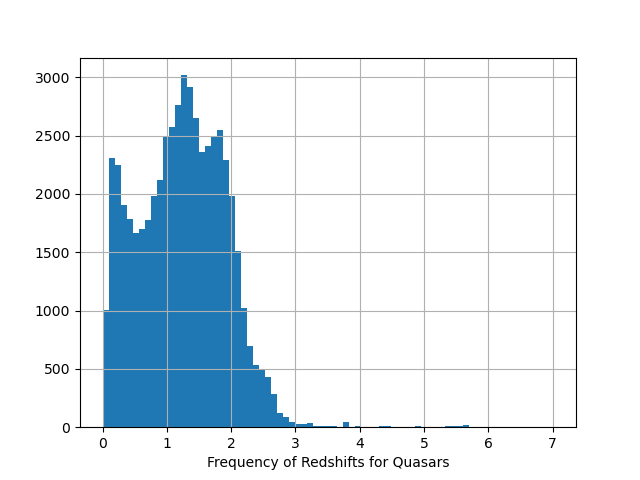
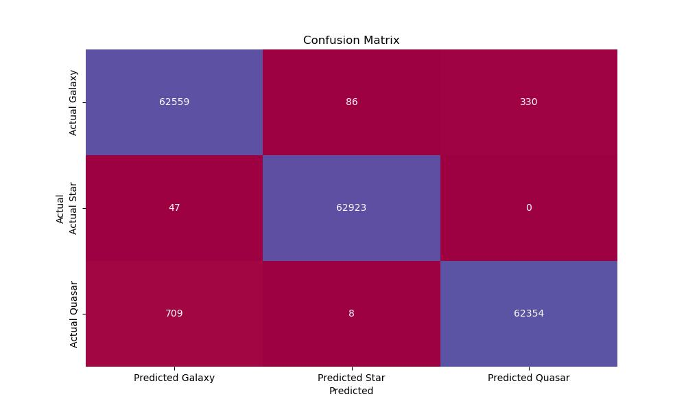

Projects
Stellar Object Classification
The goal of this project is to create a model that
accurately distinguishes between types of stellar objects from
Sloan Digital Sky Survey (SDSS) data to help physicists more
finely distinguish quasars, galaxies, and stars.
A SQL query of the SDSS database yielded 500,000 labeled stellar objects.
The resulting Random Forest Classificaiton Model had 99.4% accuracy.
Further, the misclassified quasar objects seem to fit in the range of redshift
values for what astronomers call the 'Quasar Redshift Anomaly'.


Technologies used: Python, Pandas, Scikit-Learn, etc.
Project on GitHub
Chicago Mortality Insights
Group Project: Our group found data from the Cook County Medical Examiner's office and
created a scenario apply a wide range of data science skills.
While acknowledging the qualifications of the office's staff,
our proposal aims to introduce a tool enhancing the validity
and accuracy of findings, aligning with the ever-changing challenges in public health.
Our focus extends to addressing the prevalence of accidental deaths,
especially in the post-COVID-19 era, aligning with the
Cook County Commissioner's commitment to rectifying disparities and injustices.


Technologies used: Python, Pandas, Scikit-Learn, etc.
Project on GitHub
Education
B.A. Philosophy, Physics Minor, John Carroll University, Graduated: May 2013
Data Science Immersive, Completed 500+ hours of expert-led instruction, hands-on projects, labs, and quizzes in Data Science, Statistics, Regression, Classification,
Web Scraping APIs, Natural Language Processing, Supervised and Unsupervised Machine Learning, Neural Networks, and SQL. General Assembly, Graduated: December 2023